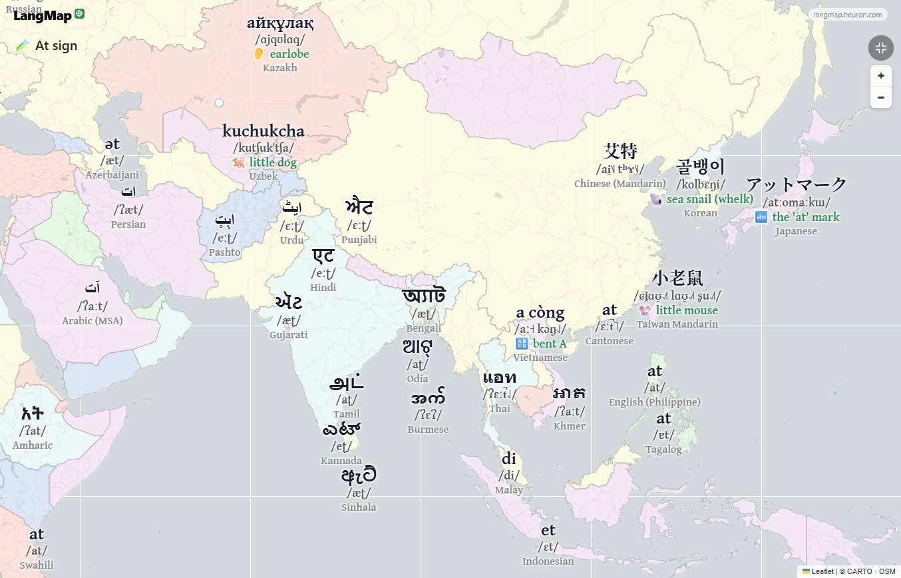

Sinosphere · · revised · Facebook post
What You Call the "@" Sign in Asia
- Every keyboard in Asia has the same "@" key, but the languages do not agree on what to call it.
- Korean sees a sea snail, Taiwan sees a little mouse, Vietnamese sees a bent A, and Japanese turned English into "at mark".
- Most of South and Southeast Asia simply says "at", and Malay translates it.

Contents
One symbol, many names
The same key sits on every keyboard from Seoul to Mumbai.
@
You type it in every email address.
But say it out loud, and Asia splits apart.
Korean: 골뱅이 (golbaengi), "sea snail"
Taiwan Mandarin: 小老鼠 (xiǎo lǎoshǔ), "little mouse"
Vietnamese: a còng, "bent A"
Japanese: アットマーク (atto māku), "at mark"
Mandarin (mainland): 艾特 (àitè)
Cantonese: at
Six names for one small circle.
Some of them describe what the symbol looks like.
Others simply copy the English word "at".
Snails, mice and a bent A
Korean looks at the curl and sees a shell.
골뱅이 (golbaengi)
A golbaengi is a whelk, a sea snail with a spiral shell. The curl around the a is the shell.
Taiwan looks at the same curl and sees a tail.
小老鼠 (xiǎo lǎoshǔ), "little mouse"
The a is the body, and the line wrapping around it is the mouse's tail.
Vietnamese goes the most literal way.
a còng
It is simply the letter a, bent, or hunched, around itself.
Three neighbours, three pictures: an animal from the sea, an animal from the house, and a letter of the alphabet.
Japan and mainland China: English in disguise
Japanese did not reach for an image.
It took the English word and added "mark":
アットマーク (atto māku)
That is "at mark", an English-looking compound made in Japan. English speakers themselves just say "at".
Mainland Mandarin borrowed the English word as well, and wrote it with two characters chosen for their sound:
艾特 (àitè)
Neither character means anything about the symbol. 艾 is a plant, mugwort. 特 means special. Together they are only there to sound like "at".
Online, 艾特 is also used as a verb: to "@" someone, to tag them in a post.
Cantonese skips the characters and just says the English word, at.
South and Southeast Asia: "at"
Move south and west, and the map turns almost uniform.
Thai: แอท
Khmer: អាត
Burmese: အက်
Hindi: एट
Bengali: অ্যাট
Tamil: அட்
Tagalog: at
Indonesian: et
Different scripts, one English word.
Malay does something different again. It does not borrow "at"; it translates it:
Malay: di
Di is the ordinary Malay word for "at" or "in".
Further west: dogs, monkeys and strudel
Leave Asia and the zoo gets bigger.
Uzbek: kuchukcha, "little dog"
Russian: собака (sobaka), "dog"
Dutch: apenstaartje, "monkey's tail"
German: Klammeraffe, "spider monkey"
Italian: chiocciola, "snail"
Greek: παπάκι (papáki), "duckling"
Hungarian: kukac, "worm"
Finnish: kissanhäntä, "cat's tail"
Hebrew: שטרודל (shtrudel), "strudel"
Spanish and Portuguese call it arroba, the name of an old unit of weight.
Korean's sea snail turns out to have company: the Italian, Ukrainian and Welsh names also see a snail.
One curl, many pictures
Go back to the keyboard.
@
A snail in Seoul. A mouse in Taipei. A bent letter in Hanoi. An "at mark" in Tokyo. Just "at" from Bangkok to Delhi.
The symbol was the same everywhere. What each language saw in it was not.
The world typed the same key, and each language drew its own animal.